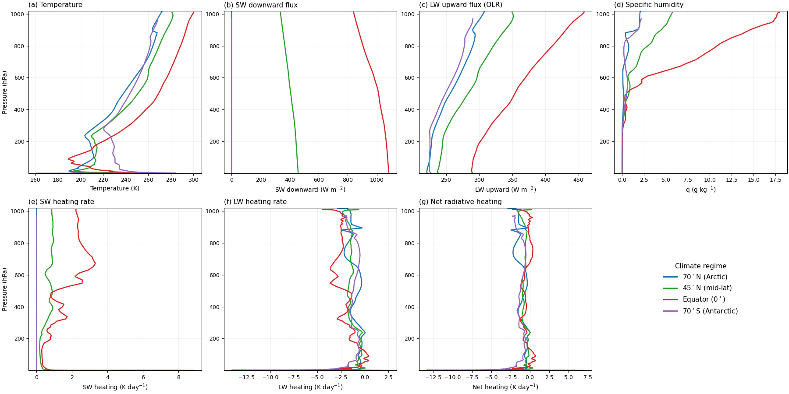
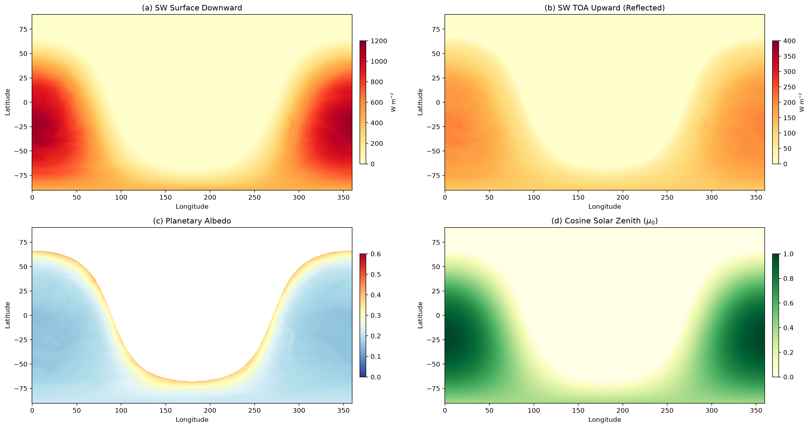
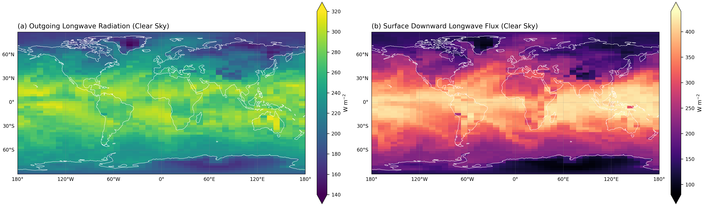
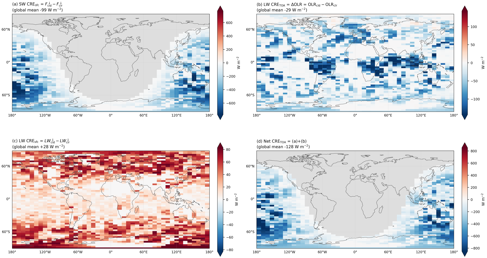

第四章 ERA5驱动下的全球物理通量逐段精读
4.1 实验设计
To demonstrate physical consistency at production scale, we drive the differentiable radiation solver with initial fields from the ERA5 global reanalysis. The analysis at 00 UTC on 1 January 2024 provides temperature, specific humidity, ozone, logarithm of surface pressure, and cloud fields on the 137-level ECMWF hybrid vertical grid (L137). All fields are interpolated to a common 0.5° grid (259,920 points) using the ECMWF MIR interpolation library.
为展示生产规模的物理一致性，我们用ERA5全球再分析的初始场驱动可微分辐射求解器。2024年1月1日00 UTC的分析提供了137层ECMWF混合垂直网格上的温度、比湿、臭氧、地面气压对数和云场。所有场使用ECMWF MIR插值库插值到共同的0.5°网格（259,920点）。
本段确立实验的真实性：不是用简化的合成大气，而是用真实的ERA5再分析数据。259,920列×137层的规模相当于业务预报的分辨率——证明方案在生产规模下能产生物理合理的结果。
4.2 四区域通量廓线

图1：四个气候区域的辐射通量和加热率。蓝=70°N，绿=45°N，红=赤道，紫=70°S。
逐面板解读：
- (a) 温度：赤道300K，南极268K——32K差异直接影响长波发射（Planck函数∝T⁴）
- (b) 短波向下通量：极地两列为零（极夜，μ₀=0），赤道~840 W/m²
- (c) 长波向上通量(OLR)：从南极222 W/m²递增到赤道290 W/m²——符合Planck函数温度依赖
- (e) 短波加热率：赤道低对流层增温>2 K/天（水汽近红外吸收），极地为零
- (f) 长波加热率：所有区域对流层上层冷却~-3 K/天（温室气体向太空发射红外）
- (g) 净加热率：低层增温+上层冷却=偶极结构→驱动对流不稳定
4.3 与文献对比
These results are physically consistent with established benchmarks. The tropical clear-sky OLR of 290 W m⁻² falls within the 265–300 W m⁻² range reported for equatorial winter conditions by Kiehl and Trenberth (1997). The global-mean clear-sky planetary albedo of 0.17 agrees with the canonical value of ~0.15–0.18.
这些结果与已建立的基准物理一致。热带晴空OLR 290 W/m²落在Kiehl和Trenberth (1997)报告的赤道冬季265-300 W/m²范围内。全球平均晴空行星反照率0.17与经典值~0.15-0.18一致。
本段将方案输出与独立文献基准对比——证明可微分方案不仅与Fortran一致（第三章），而且与更大的科学社区的观测/理论结果一致。这排除了"代码精确但物理错误"的可能性。
4.4 全球辐射场

图3：全球短波辐射场。259,920列同时计算。日侧在南方（1月南半球夏季）。

图3b：全球长波辐射场（晴空）。(a) OLR从极地141到热带316 W/m²。(b) 地面向下LW从85（南极高原）到433 W/m²（热带）。
全球平均晴空行星反照率0.17，OLR范围141–316 W/m²——全部在文献基准范围内。
地面向下长波通量的物理含义：热带最大值433 W/m²对应 $\epsilon_\mathrm{atm}\sigma T_s^4$（近黑体低层大气在 $T_s\approx305$ K 的发射），极地最小值85 W/m²对应寒冷、干燥的南极高原大气。注意：地表向上发射（$\sigma T_s^4\approx523$ W/m²）远大于大气向下逆辐射（433 W/m²），净长波冷却驱动地表辐射收支。
4.5 云辐射效应（Cloud Radiative Effect）

Cloud radiative effect (CRE), defined as the cloudy-minus-clear flux difference, computed with real ERA5 cloud fraction and liquid/ice water content on 2,700 subsampled columns from the 0.5° grid (00 UTC 1 January 2024, 137 levels). Divergent colormaps use red for positive values; panel titles report global means. Gray marks the night hemisphere, where shortwave quantities are undefined; longwave panels are defined globally. The longwave TOA effect is reported as ΔOLR = OLRcld − OLRclr, so negative values mean clouds reduce OLR. (a) SW CRE at the surface (global mean −99 W m−2). (b) LW CRE at the TOA as ΔOLR (global mean −29 W m−2). (c) LW CRE at the surface (global mean +28 W m−2). (d) Net CRE at the TOA, SWTOA + ΔOLR (global mean −128 W m−2), dominated by the shortwave component.
The verification and global-map results above are all clear sky. We now exercise the full cloudy-sky pathway of both the shortwave and longwave schemes by driving them with the real ERA5 cloud fields—cloud fraction, liquid water content, and ice water content—on the same 0.5° grid. Cloud optical properties are derived from the in-cloud water paths using bulk parameterizations consistent with the OpenIFS simplifications: shortwave cloud optical depth $\tau_\mathrm{SW} \approx 30\,\mathrm{LWP} + 50\,\mathrm{IWP}$ (where LWP and IWP are the layer-integrated liquid and ice water paths in kg m$^{-2}$), and longwave cloud optical depth per band $\tau_\mathrm{LW} \approx 15\,\mathrm{LWP} + 25\,\mathrm{IWP}$ distributed over the cloudy layers. This is a controlled demonstration of the cloudy pathway rather than a full cloud-optics validation; the objective is to confirm that the differentiable scheme reproduces the physically expected cloud radiative effect (CRE) on the global scale.
我们现在用真实ERA5云场（云量、液态水含量、冰水含量）驱动短波和长波方案的完整云天路径。云的光学性质由云内水路径导出。目标是确认可微分方案在全球尺度上重现物理上预期的云辐射效应（CRE）。
这是对审稿人"晴空验证充分，但云天验证缺失"意见的直接回应。前面的验证（第3章 bit-exact、第4章全球通量）全是晴空；本节首次展示可微分方案能正确处理真实、水平变化的云场——这是云-辐射反馈分析的前提。
四面板CRE解读（符号约定：所有CRE = 云天 − 晴天）：
- (a) 短波CRE（地表）：全蓝（负值，全球均值 −99 W/m²）。云反射短波，使地表变冷。最强负值（−400到−900）在南半球热带深对流区（ITCZ、海洋大陆）和风暴轴——这些是光学厚度最大的云。
- (b) 长波CRE（顶空，ΔOLR）：以蓝为主（全球均值 −29 W/m²）。云温室效应：冷云顶发射弱，减少OLR。注意符号：这里报告的是 $\Delta\mathrm{OLR}=\mathrm{OLR}_\mathrm{cld}-\mathrm{OLR}_\mathrm{clr}$（负=云减少OLR），与某些文献"向下为正"的净CRE约定相反。
- (c) 长波CRE（地表）：全红（正值，全球均值 +28 W/m²）。云底以接近云底温度向下发射热辐射，增强地表向下通量。
- (d) 净顶空CRE：被短波主导（全球均值 −128 W/m²），与1月北半球冬季云分布一致。
灰底含义：夜半球（无入射太阳辐射），短波CRE无定义；长波面板(b,c)全天候有定义。
全球均值与观测基准吻合：SW CRE地表 −99（文献 −75~−100），LW CRE顶空 −29（文献 −25~−30），LW CRE地表 +28（文献 +20~+30），净TOA CRE −128（1月）。最强的SW CRE（−936 W/m²）位于南太平洋暖池（lat −18°, lon 192°）——全球最深对流区。